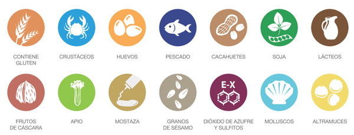

La Carta
¿Qué Ofrecemos?
Cuando nos visites, no puedes perderte nuestra amplia variedad de platos y postres de la cocina típica canaria, elaborados todos ellos al momento.
Época del año recomendada |
Media |
Entera |
||
|---|---|---|---|---|
Entrantes |
Papas arrugadas con mojo | Todos | -€ | 5,50€ |
| Ropa vieja | Invierno | -€ | 5,00€ | |
| Queso tierno | Todos | -€ | 5,00€ | |
| Pimientos de padrón | Todos | -€ | 3,00€ | |
| --------- | --------- | ------ | ------ | |
Sopas |
Escaldón de gofio | Todos | -€ | 3,50€ |
| Sopa de marisco | Invierno | 5,50€ | 8,00€ | |
| --------- | --------- | ------ | ------ | |
Pescados |
Cherne frito con papas arrugadas | Verano | 5,50€ | 8,00€ |
| Lapas con mojo verde | Verano | 5,50€ | 8,00€ | |
| Sancocho | Invierno, Primavera | 8,50€ | 12,00€ | |
| Gambas al ajillo | Verano | 5,50€ | 8,00€ | |
| --------- | --------- | ------ | ------ | |
Carnes |
Pata asada | Todos | 5,50€ | 8,00€ |
| Chuleta de cerdo | Todos | 5,50€ | 8,00€ | |
| Chorizos parrilleros | Todos | 5,50€ | 8,00€ | |
| Parrillada de carne (2 personas) | Invierno | 15,00€ | 28,00€ | |
| --------- | --------- | ------ | ------ | |
Postres |
Helados variados | Verano | -€ | 1,50€ |
| Frangollo | Todos | -€ | 3,50€ | |
| Mousse de gofio | Todos | -€ | 3,50€ | |
| Helado con bienmesabe | Verano | -€ | 4,50€ | |
| --------- | --------- | ------ | ------ | |
** Pinche sobre cada uno de nuestros platos para obtener una descripción más amplia. En ella, podrá encontrar información a cerca de los alérgenos, ingredientes y calorias.
¿Te gustaría disfrutar de nuestra comida en tu domicilio?
Pregunta por nuestros platos para llevar.
Información Alérgenos:
